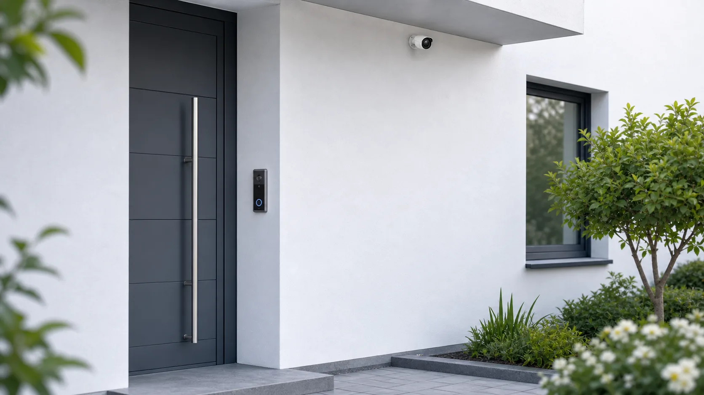

PoE · Doorbell · Kameras · lokaler NVR
Netzwerk für Doorbell, Kameras und lokale Aufzeichnung.
Beratung & Technik plant PoE-Switch, Netzwerkpunkte, lokale oder cloudbasierte Aufzeichnung und die Einbindung ins Heimnetz. Elektro- und Montagearbeiten erfolgen durch Elektriker oder entsprechend berechtigte Partner.
Sicherheitsnetzwerk anfragen
Stabile Basis
Doorbell und Kameras zuverlässig anbinden.
Für Eingangsbereich, Einfahrt, Garage und Garten wird die Netzwerkanbindung früh geplant. PoE, Switch, Leitungswege und Montagepunkte werden mit Elektriker oder Partnerbetrieb abgestimmt.
PoE & Switch
Daten und Strom über ein Netzwerkkabel, ausreichendes PoE-Budget und Reserve für spätere Geräte.
Standorte
Eingang, Paketbereich, Einfahrt, Garage und Garten werden gezielt in die Netzplanung einbezogen.
Aufzeichnung
Lokaler NVR, Speicherbedarf, Aufbewahrungsdauer und Verhalten bei Internetausfall werden eingeordnet.
App & Zugriff
Fernzugriff, Benachrichtigungen, lokale Funktionen und Cloudabhängigkeit werden vor der Systemwahl geprüft.
Lokal oder Cloud
Aufzeichnung und Betrieb bewusst entscheiden.
Lokale Speicherung kann laufende Cloud-Abos reduzieren und Aufzeichnung auch bei einem Internetausfall ermöglichen. Sie erfordert aber geeigneten Speicher, Backupüberlegungen, Updates und klare Zuständigkeiten.
Lokale Aufzeichnung
- NVR oder geeigneter lokaler Speicher
- Speicherbedarf und Aufbewahrung
- USV für zentrale Komponenten prüfen
- Backup und Geräteaustausch einplanen
Cloudbasierte Funktionen
- Einfacher Fernzugriff möglich
- Abos und Herstellerbindung beachten
- Verhalten bei Internetausfall klären
- Datenstandort und Export prüfen
Eine stabile Basis für Eingang, Einfahrt und Garten.
Gemeinsam klären wir Netzwerkpunkte, PoE, Aufzeichnung und die passende Einbindung in Ihr Heimnetz.
Vorhaben kostenlos einschätzen lassen